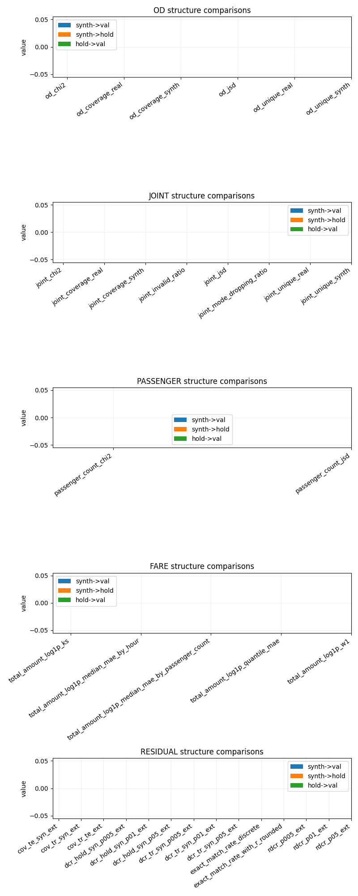
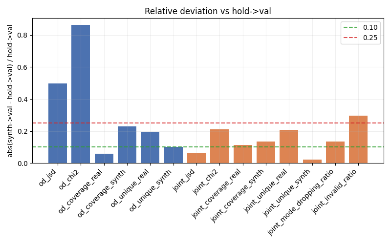
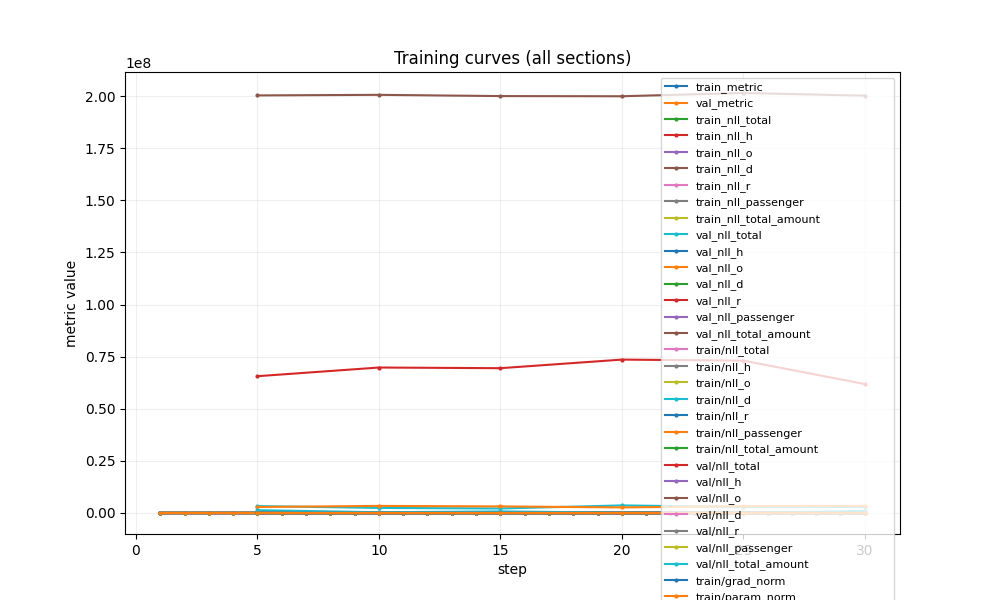

comparison_metrics ok
Family-level metric comparison
Path: figs/comparison_metrics.png · Reason: generated
generated

Run: outputs/save_data/ryc/tht_tripgen_20260212_234749
Generated at: 2026-02-13T16:43:01.991733+00:00
{
"output_dir": "outputs/save_data/ryc/tht_tripgen_20260212_234749/analysis",
"analysis_report_json": "outputs/save_data/ryc/tht_tripgen_20260212_234749/analysis/analysis_report.json",
"analysis_summary_csv": "outputs/save_data/ryc/tht_tripgen_20260212_234749/analysis/analysis_summary.csv",
"analysis_metrics_long_csv": "outputs/save_data/ryc/tht_tripgen_20260212_234749/analysis/analysis_metrics_long.csv",
"analysis_training_long_csv": "outputs/save_data/ryc/tht_tripgen_20260212_234749/analysis/analysis_training_long.csv",
"analysis_tooltips_csv": "outputs/save_data/ryc/tht_tripgen_20260212_234749/analysis/analysis_tooltips.csv",
"analysis_report_html": "outputs/save_data/ryc/tht_tripgen_20260212_234749/analysis/analysis_report.html",
"figures_dir": "outputs/save_data/ryc/tht_tripgen_20260212_234749/analysis/figs",
"comparison_plot": "figs/comparison_metrics.png",
"leakage_plot": "figs/comparison_leakage.png",
"training_plot": "figs/training_curves.png"
}
matplotlib available: True
| Metric | Label | Family | Synth→Val | Synth→Hold | Hold→Val | Risk | Relative gap | Abs gap | Description |
|---|---|---|---|---|---|---|---|---|---|
| total_amount_log1p_ks | total_amount log1p KS | fare | 0.023128 | 0.015765 | – | unknown | – | – | KS statistic for log1p(total_amount) distribution. |
| total_amount_log1p_median_mae_by_hour | total_amount log1p median MAE by hour | fare | 0.021371 | 0.013422 | – | unknown | – | – | Hourly median profile MAE for log1p(total_amount). |
| total_amount_log1p_median_mae_by_passenger_count | total_amount log1p median MAE by passenger_count | fare | 0.425258 | 0.248767 | – | unknown | – | – | Profile MAE for log1p(total_amount) by passenger_count bins. |
| total_amount_log1p_quantile_mae | total_amount log1p quantile MAE | fare | 0.048338 | 0.037877 | – | unknown | – | – | Log1p quantile MAE for total_amount distribution. |
| total_amount_log1p_w1 | total_amount log1p Wasserstein-1 | fare | 0.030998 | 0.020612 | – | unknown | – | – | Wasserstein-1 distance for log1p(total_amount) distribution. |
| joint_chi2 | Joint Chi² | joint | 461513.566006 | 229925.143966 | 381467.520313 | medium | 0.2098 | 80046.0457 | Joint OD+time chi-square divergence. |
| joint_coverage_real | Joint coverage (real) | joint | 0.605019 | 0.621482 | 0.543864 | medium | 0.1124 | 0.0612 | Real joint support coverage (higher is better). |
| joint_coverage_synth | Joint coverage (synth) | joint | 0.59234 | 0.618652 | 0.685797 | medium | 0.1363 | 0.0935 | Synthetic joint support coverage (higher is better). |
| joint_invalid_ratio | Joint invalid ratio | joint | 0.40766 | 0.381348 | 0.314203 | high | 0.2974 | 0.0935 | Portion of invalid OD pairs in synthetic samples. |
| joint_jsd | Joint JSD | joint | 0.164715 | 0.128937 | 0.154505 | low | 0.0661 | 0.0102 | Joint OD+time distribution mismatch. |
| joint_mode_dropping_ratio | Joint mode dropping ratio | joint | 0.394981 | 0.378518 | 0.456136 | medium | 0.1341 | 0.0612 | Portion of real joint modes that disappear in synthetic. |
| joint_unique_real | Joint unique modes (real) | joint | 236315 | 297986 | 297986 | medium | 0.207 | 61671 | Unique OD+time mode count for real data. |
| joint_unique_synth | Joint unique modes (synth) | joint | 241373 | 299349 | 236315 | low | 0.0214 | 5058 | Unique OD+time mode count for synthetic data. |
| od_chi2 | OD Chi² | od | 37150.658811 | 19318.339839 | 19951.790957 | high | 0.862 | 17198.8679 | OD chi-square divergence for synthetic vs real. |
| od_coverage_real | OD coverage (real) | od | 0.665617 | 0.681708 | 0.629153 | low | 0.058 | 0.0365 | Real OD support coverage (higher is better). |
| od_coverage_synth | OD coverage (synth) | od | 0.603951 | 0.62602 | 0.782795 | medium | 0.2285 | 0.1788 | Synthetic OD support coverage (higher is better). |
| od_jsd | OD JSD | od | 0.013529 | 0.011815 | 0.009027 | high | 0.4987 | 0.0045 | Distribution mismatch between OD marginals. |
| od_unique_real | OD unique modes (real) | od | 14926 | 18571 | 18571 | medium | 0.1963 | 3645 | Unique OD modes observed in the real distribution. |
| od_unique_synth | OD unique modes (synth) | od | 16450 | 20223 | 14926 | medium | 0.1021 | 1524 | Unique OD modes generated by synthetic samples. |
| passenger_count_chi2 | passenger_count Chi² | passenger | 0.000428 | 0.00091 | – | unknown | – | – | Chi-square mismatch for passenger_count counts. |
| passenger_count_jsd | passenger_count JSD | passenger | 0.000054 | 0.000113 | – | unknown | – | – | Distribution mismatch for passenger_count between real and synthetic. |
| cov_te_syn_ext | cov te syn extended | residual | 95.994 | 95.748 | – | unknown | – | – | Residual-aware extended metric from cov_te_syn_ext. |
| cov_tr_syn_ext | cov tr syn extended | residual | 96.196 | 95.065 | – | unknown | – | – | Residual-aware extended metric from cov_tr_syn_ext. |
| cov_tr_te_ext | cov tr te extended | residual | 96.66 | 95.129 | – | unknown | – | – | Residual-aware extended metric from cov_tr_te_ext. |
| dcr_hold_syn_p005_ext | dcr hold syn p005 extended | residual | 0.068355 | 0.066425 | – | unknown | – | – | Residual-aware extended metric from dcr_hold_syn_p005_ext. |
| dcr_hold_syn_p01_ext | dcr hold syn p01 extended | residual | 0.094291 | 0.098218 | – | unknown | – | – | Residual-aware extended metric from dcr_hold_syn_p01_ext. |
| dcr_hold_syn_p05_ext | dcr hold syn p05 extended | residual | 0.181642 | 0.183008 | – | unknown | – | – | Residual-aware extended metric from dcr_hold_syn_p05_ext. |
| dcr_tr_syn_p005_ext | dcr tr syn p005 extended | residual | 0.072036 | 0.069456 | – | unknown | – | – | Residual-aware extended metric from dcr_tr_syn_p005_ext. |
| dcr_tr_syn_p01_ext | dcr tr syn p01 extended | residual | 0.098198 | 0.097647 | – | unknown | – | – | Residual-aware extended metric from dcr_tr_syn_p01_ext. |
| dcr_tr_syn_p05_ext | dcr tr syn p05 extended | residual | 0.190227 | 0.185672 | – | unknown | – | – | Residual-aware extended metric from dcr_tr_syn_p05_ext. |
| exact_match_rate_discrete | Exact match rate (discrete) | residual | 0.937175 | 0.936475 | – | unknown | – | – | Exact-match privacy rate in discrete OD/time space. |
| exact_match_rate_with_r_rounded | Exact match rate with r rounded | residual | 0.256413 | 0.258455 | – | unknown | – | – | Exact-match privacy rate after residual (r) rounding. |
| rdcr_p005_ext | rdcr p005 extended | residual | 1.05385 | 1.045626 | – | unknown | – | – | Residual-aware extended metric from rdcr_p005_ext. |
| rdcr_p01_ext | rdcr p01 extended | residual | 1.041439 | 0.994185 | – | unknown | – | – | Residual-aware extended metric from rdcr_p01_ext. |
| rdcr_p05_ext | rdcr p05 extended | residual | 1.047262 | 1.014554 | – | unknown | – | – | Residual-aware extended metric from rdcr_p05_ext. |
| Metric ID | Name | Family | Preferred | Description | Lower is better |
|---|---|---|---|---|---|
| comparison_summary__abs_gap_to_hold_val | Abs gap from hold->val | derived | smaller is better | Absolute difference between synth->val and hold->val. Lower suggests synthetic is close to real split drift. | yes |
| comparison_summary__generalization_shift | Generalization shift | derived | smaller is better | How much synth->val differs from synth->hold beyond hold->val variation. | yes |
| comparison_summary__relative_gap_to_hold_val | Relative gap from hold->val | derived | smaller is better | Absolute gap normalized by hold->val. Helps compare scale across metrics. | yes |
| cov_te_syn_ext | cov te syn extended | residual | larger is better | Residual-aware extended metric from cov_te_syn_ext. | no |
| cov_tr_syn_ext | cov tr syn extended | residual | larger is better | Residual-aware extended metric from cov_tr_syn_ext. | no |
| cov_tr_te_ext | cov tr te extended | residual | larger is better | Residual-aware extended metric from cov_tr_te_ext. | no |
| dcr_hold_syn_p005_ext | dcr hold syn p005 extended | residual | smaller is better | Residual-aware extended metric from dcr_hold_syn_p005_ext. | yes |
| dcr_hold_syn_p01_ext | dcr hold syn p01 extended | residual | smaller is better | Residual-aware extended metric from dcr_hold_syn_p01_ext. | yes |
| dcr_hold_syn_p05_ext | dcr hold syn p05 extended | residual | smaller is better | Residual-aware extended metric from dcr_hold_syn_p05_ext. | yes |
| dcr_tr_syn_p005_ext | dcr tr syn p005 extended | residual | smaller is better | Residual-aware extended metric from dcr_tr_syn_p005_ext. | yes |
| dcr_tr_syn_p01_ext | dcr tr syn p01 extended | residual | smaller is better | Residual-aware extended metric from dcr_tr_syn_p01_ext. | yes |
| dcr_tr_syn_p05_ext | dcr tr syn p05 extended | residual | smaller is better | Residual-aware extended metric from dcr_tr_syn_p05_ext. | yes |
| exact_match_rate_discrete | Exact match rate (discrete) | residual | larger is better | Exact-match privacy rate in discrete OD/time space. | no |
| exact_match_rate_with_r_rounded | Exact match rate with r rounded | residual | larger is better | Exact-match privacy rate after residual (r) rounding. | no |
| joint_chi2 | Joint Chi² | joint | smaller is better | Joint OD+time chi-square divergence. | yes |
| joint_coverage_real | Joint coverage (real) | joint | larger is better | Real joint support coverage (higher is better). | no |
| joint_coverage_synth | Joint coverage (synth) | joint | larger is better | Synthetic joint support coverage (higher is better). | no |
| joint_invalid_ratio | Joint invalid ratio | joint | smaller is better | Portion of invalid OD pairs in synthetic samples. | yes |
| joint_jsd | Joint JSD | joint | smaller is better | Joint OD+time distribution mismatch. | yes |
| joint_mode_dropping_ratio | Joint mode dropping ratio | joint | smaller is better | Portion of real joint modes that disappear in synthetic. | yes |
| joint_unique_real | Joint unique modes (real) | joint | larger is better | Unique OD+time mode count for real data. | no |
| joint_unique_synth | Joint unique modes (synth) | joint | larger is better | Unique OD+time mode count for synthetic data. | no |
| od_chi2 | OD Chi² | od | smaller is better | OD chi-square divergence for synthetic vs real. | yes |
| od_coverage_real | OD coverage (real) | od | larger is better | Real OD support coverage (higher is better). | no |
| od_coverage_synth | OD coverage (synth) | od | larger is better | Synthetic OD support coverage (higher is better). | no |
| od_jsd | OD JSD | od | smaller is better | Distribution mismatch between OD marginals. | yes |
| od_unique_real | OD unique modes (real) | od | larger is better | Unique OD modes observed in the real distribution. | no |
| od_unique_synth | OD unique modes (synth) | od | larger is better | Unique OD modes generated by synthetic samples. | no |
| passenger_count_chi2 | passenger_count Chi² | passenger | smaller is better | Chi-square mismatch for passenger_count counts. | yes |
| passenger_count_jsd | passenger_count JSD | passenger | smaller is better | Distribution mismatch for passenger_count between real and synthetic. | yes |
| rdcr_p005_ext | rdcr p005 extended | residual | smaller is better | Residual-aware extended metric from rdcr_p005_ext. | yes |
| rdcr_p01_ext | rdcr p01 extended | residual | smaller is better | Residual-aware extended metric from rdcr_p01_ext. | yes |
| rdcr_p05_ext | rdcr p05 extended | residual | smaller is better | Residual-aware extended metric from rdcr_p05_ext. | yes |
| total_amount_log1p_ks | total_amount log1p KS | fare | smaller is better | KS statistic for log1p(total_amount) distribution. | yes |
| total_amount_log1p_median_mae_by_hour | total_amount log1p median MAE by hour | fare | smaller is better | Hourly median profile MAE for log1p(total_amount). | yes |
| total_amount_log1p_median_mae_by_passenger_count | total_amount log1p median MAE by passenger_count | fare | smaller is better | Profile MAE for log1p(total_amount) by passenger_count bins. | yes |
| total_amount_log1p_quantile_mae | total_amount log1p quantile MAE | fare | smaller is better | Log1p quantile MAE for total_amount distribution. | yes |
| total_amount_log1p_w1 | total_amount log1p Wasserstein-1 | fare | smaller is better | Wasserstein-1 distance for log1p(total_amount) distribution. | yes |
A missing plot usually means missing data rows or no plot dependency in the environment.
Family-level metric comparison
Path: figs/comparison_metrics.png · Reason: generated
generated

Relative split deviation
Path: figs/comparison_leakage.png · Reason: generated
generated

Training time-series
Path: figs/training_curves.png · Reason: generated
generated
